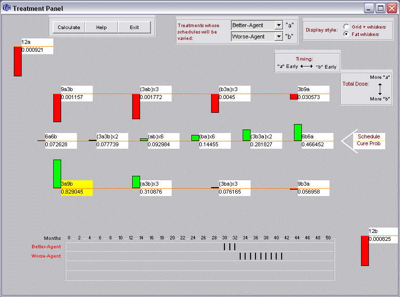
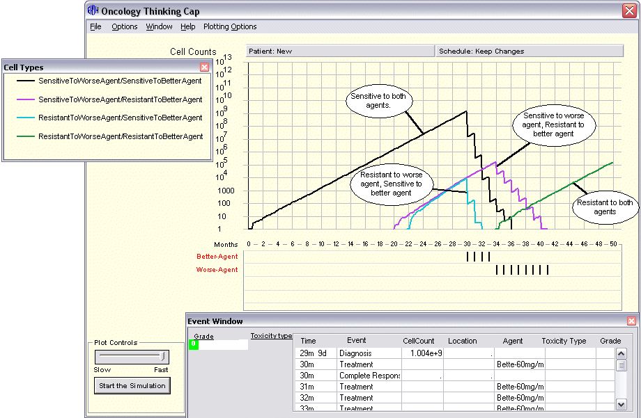

Jim Goldie and Andy Coldman proposed a branching process model for the following situation:
(The best way to explore these issues is with OncoTCap Version 2, which provides exact calculations of the probability of zero cells after treatment, and integrates these exact calculations with stochastic simulation. See the next section below.)
First, run the model as provided. The parameters are "symmetric";
the two drugs A and B have equal potency on the cells which are sensitive to
them, the corresponding mutation rates to resistance are the same, and so on.
The alternating schedule provides the best chance of removing all the cancer
cells. Set up a sequential schedule, e.g
A A A A A A B B B B B B.
There will be cases in which the sequential schedule fails to eliminate cells
because cells resistant to A grow out unchecked.
Compare this with an alternating schedule
A
B A B A B A B A B A B.
In this case, both RA and RB sub-populations are controlled, and in some cases
eliminated.
(In Version 2, this comparison is easier to do, since a simulation can be
re-started with the same random number "seed" but a different treatment
schedule. Unlike in real life, one gets to take both forks of the road and see
where each goes. In time, this and other features will be migrated to the new
Version. )
Second, change the cell kill parameters so that agent A become much more potent
(logkill = 2) and B much less potent (logkill = 1/2) . Again, begin with the
sequential schedule. Starting with the "best drug" A may seem entirely
reasonable. Observing a number of simulations, you will find this schedule to
be entirely unsuccessful. Instead try starting with the "worst drug"
B:
B
B B B B B A A A A A A.
Principles discovered using the OncoTCap Version 2 "N=∞
engine (exact calculation) can be viewed to operate in specific patient
histories to gain better insight. For example, consider the two-drug scenario.
From the exact solution, the probability of killing all tumor cells is calculated
for various treatment strategies:

Figure 1: OncoTCap 2, probabilities of killing all cancer cells for
16 treatment schedules
Here the cure probability show that, although “a” is twice as potent as “b”, the best schedules favor either “b” early (right side of middle row) or more total “b” (bottom of left side). To understand this, it helps to interact with a stochastic simulation. In the following OncoTCap 2 screen shot, the dynamics of tumor heterogeneity and selection can be seen.

Figure 2: OncoTCap 2, stochastic simulation
Here dragging the fourth treatment from “Better Agent” to “Worse
Agent” leads to a cure, and the graphic makes it obvious why: the fourth
“Better Agent” does not kill the cells which will shortly give rise
to the doubly resistant subpopulation.
The “worst drug rule” principle continues to be discussed in regard
to lung cancer. However, to apply this principle directly requires good evidence
for the basic premise, that drug resistance stems from somatic mutation, and
some confidence that some critical biology has not been omitted.
Version 2 is limited by its highly structured representation of the biology
and by the absence of support for model-building for particular settings like
treatment of advance non-small cell lung cancer or breast cancer.